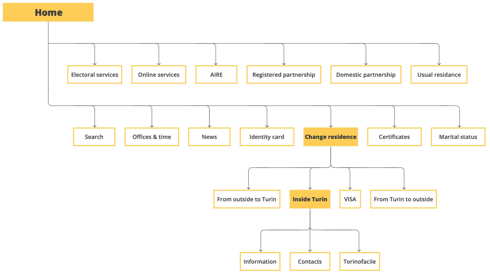

UX, SERVICE DESIGN, PUBLIC SECTOR
Turin Registry Office — Website Redesign & Chatbot
Redesign of the Turin Registry Office digital services with chatbot integration, aiming to simplify complex procedures and reduce waiting times for citizens.
Timeline
4 months
Team
5 designers
My Role
UX Designer: research, usability testing, wireframes, chatbot interaction design
Challenge
Simplify complex bureaucratic services (like change of residence) and reduce in-person office visits by redesigning the registry office website.
Solution
End-to-end website redesign with a guided procedure, chatbot assistant (“Ian”), improved information architecture, and mobile-first UI tested with citizens.
Overview
The Registry Office of Turin collaborated with Politecnico di Milano to improve its public services. We focused on redesigning the website and integrating a chatbot to simplify key procedures such as the change of residence, and to reduce citizens’ need to physically visit the office.

Research
We conducted:
- Observations & interviews at registry offices to map pain points
- Desk research on municipal digital services
- Digital ethnography to understand user behaviors online
Information Architecture
We analyzed the current website structure, highlighted inefficiencies, and created a new simplified architecture to support guided tasks.
Chatbot Innovation
We designed Ian, the chatbot, to act as a digital assistant:
- Guides citizens through procedures step by step
- Uses multiple-choice questions for clarity and confidence
- Redirects users directly to the correct pages — simulating a human assistant
Design Process
- Paper mockups and wireframes of new flows - Interactive prototypes with Adobe XD - Two rounds of usability testing with iterative improvements - Mobile-first responsive design for accessibility
Results
- Citizens found the guided website flows intuitive - Chatbot prototype received positive feedback for reducing confusion - Enabled the vision of self-service kiosks in offices, reducing queues and staff workload
Project Infos
Politecnico di Milano - Course of Digital Design Studio
February 2019 - June 2019
With: Colombo, Picardi, Shahriari, Zheng.